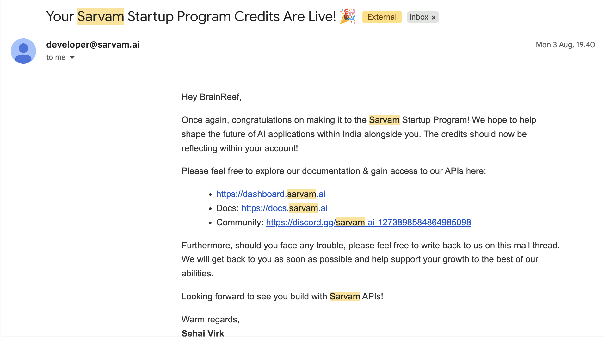
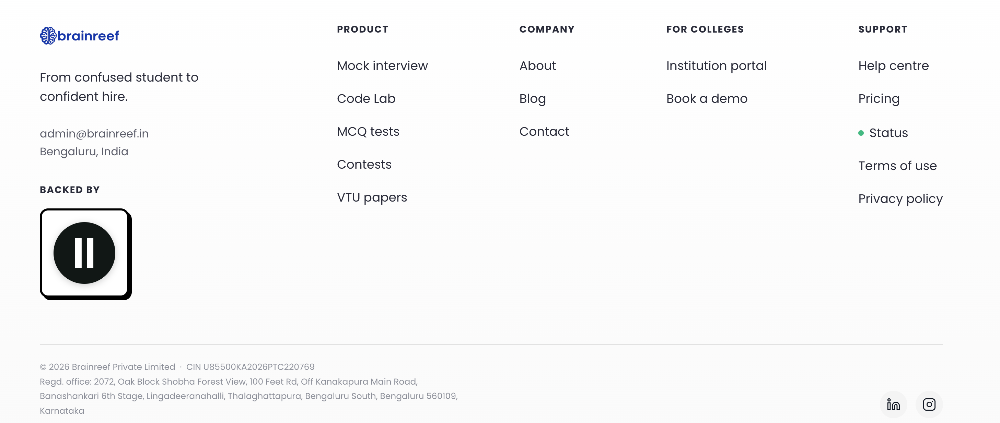
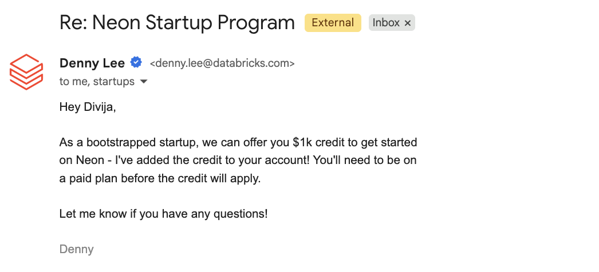

I was the co-founder and CTO of an AI-based ed-tech startup. I left the startup in October 2026 to spend time on other fields I’m interested in, particularly inference engineering, which I’m currently learning. Before moving on, I wanted to write down how we ran most of the product infrastructure without paying for every SaaS service out of pocket.
The product had an LLM chat flow and an AI mock-interview feature, so we needed quite a few services: LLMs, speech-to-text, text-to-speech, databases, analytics, error tracking, scraping, monitoring, email and the usual infrastructure around all of that.
The SaaS bill was much smaller than it could have been. Salaries were still salaries, and compute was not free. We bought a two-year VPS plan, and there were a few other small costs. But most of the services around the product were covered by startup programs, credits or free tiers.
We were bootstrapped. We didn’t get most of these through a VC referral or some accelerator network. I mostly found the programs, filled out the forms and applied. Here’s what we got and what we actually used. This is a snapshot of the setup while I was there, not a claim that I’m still operating the startup today.
Note on availability: These are the offers our accounts received. They are not guaranteed terms for every startup, and credits or free tiers can change. Some of these grants also expire.
The AI part
LLM: Sarvam
We needed an LLM first, so we applied to the Sarvam Startup Program and got accepted. We received ₹25,000 (roughly US$267) in credits. The bigger benefit for us was the Business-tier allocation attached to our account: 1,000 rpm. The program allocation was valid for six months.

We used Sarvam-105B for general chat completions and reasoning. It isn’t the model I would choose for every possible task, but our use case was fairly contained. For the things we asked it to do, it was more than enough.
The 1,000 RPM figure was specific to the allocation we received. It is not a number I’d assume every Sarvam account gets. Sarvam publishes separate limits for different APIs in its rate-limit documentation, so check the dashboard rather than treating the LLM quota as a limit for every service.
There is also a useful detail about the normal API pricing for Sarvam-105B. At the published rates, input is ₹15, cached input is ₹5 and output is ₹60 per 1M tokens.
Using the 10 November 2026 USD/INR reference rate of approximately ₹93.85 to US$1, those work out to roughly US$0.16 input, US$0.05 cached input and US$0.64 output per 1M tokens. These are rounded conversions, not USD prices charged by Sarvam. The INR prices exclude GST.
| Sarvam-105B pricing | INR per 1M tokens | Approx. USD per 1M tokens |
|---|---|---|
| Input | ₹15.00 | US$0.16 |
| Cached input | ₹5.00 | US$0.05 |
| Output | ₹60.00 | US$0.64 |
The pricing is on Sarvam’s API pricing page and the Sarvam-105B model page. The exchange-rate conversion is only a rough comparison and will move with USD/INR.
Speech: Deepgram, ElevenLabs and Sarvam
The mock-interview feature needs speech-to-text and text-to-speech. A candidate speaks, we transcribe the answer, send it to the LLM, generate the next question and speak that question back. It is a loop, not one LLM call at the beginning and one at the end.
For STT and TTS, we applied to the Deepgram Startup Program. They gave us US$1,000 in credits to start with and offered a path to request more, up to US$10,000 over a year, after the initial credits are used.
The credits were useful, but the thing we had to design around was concurrency. Deepgram's rate-limit documentation separates streaming STT and streaming TTS limits. They vary by model, region and plan, and are applied per project, not per API key. On the India endpoint, the published limits include up to 150 concurrent streaming STT requests and up to 45 concurrent Aura/Aura-2 streaming TTS requests. Those are concurrent requests, not requests per minute.
We added a fallback path for TTS. When Deepgram is at its limit or starts rejecting requests, the next generation can go to another provider. The switch happens in the backend, so the candidate does not need to know which provider generated that particular response.
For the next layer, we applied for the ElevenLabs Grants Program. We received 33,010,000 credits for STT and TTS, another 1,000,000 credits for image and video, and a Scale subscription at no cost. That subscription was valid for a year. The only condition is you need to put their logo somewhere in your website like this.

ElevenLabs has been a useful backup. Its published model limits split concurrency by model family: the Scale figures are 15 for Multilingual v2 TTS, 30 for Flash TTS, and 45 for realtime STT. Startup-grant accounts receive Scale-level benefits. So “Scale concurrency” is not one universal number. The model and API you use matter. Their rate-limiting write-up explains the difference between request rate and concurrent generation, and why WebSockets can help for conversational workloads.
We also added Sarvam STT and TTS as another fallback. That gives us another option when there is a sudden increase in interview traffic or one provider is having a bad day. I had also applied to the GLM startup program, but we did not get accepted.
The rest of the infrastructure
Cloudflare
Next was Cloudflare for Startups. We received US$10,000 in Cloudflare credits, which made a big difference because we relied on Cloudflare for a lot of things: CDN, caching, security, R2 storage, Workers, Durable Objects, Realtime, Zero Trust, SSL/TLS, DNS and D1.
It let us use paid Cloudflare features that we probably would have avoided paying for this early. We already had a lot of the product sitting on Cloudflare, so the credits went towards things we were actually using rather than some service we signed up for just because it was free.
Product analytics and error tracking
For analytics, we used PostHog. We applied to its startup program, got accepted and received US$50,000 in credits. We used it for feature flags, product analytics and surveys. They also sent us some merchandise, which somehow made its way all the way from Loveland, Ohio.
For error tracking, we used Sentry. We got accepted into its startup program and received US$5,000 in credits.
Database
Our managed database was Neon. Its startup program gave us US$1,000 in credits. That was enough for what we were doing at the time.

Scraping and browser automation
We used a few different services internally for scraping and browser work: Firecrawl, Tavily, TinyFish, Cloudflare Browser Run and Context.dev. There are quite a few providers in this space, and many of them have startup credits or a free tier. I preferred keeping these integrations behind separate adapters so that changing a provider did not mean rewriting the rest of the backend. TinyFish is probably my favourite of the group.
A lot of people end up paying for managed scraping solutions for sites with heavier bot protection. For Reddit, I found Arctic Shift, which provides an archive, a limited API and bulk data dumps. It has been a useful alternative to paying for a scraper just to query archived posts and comments. The project does not promise uptime, so I would not make it a critical dependency without another fallback.
For LinkedIn-related data collection, Bright Data's free tier has been useful for our limited needs. I would still check the current terms and usage limits before building a production dependency around any free tier.
Secrets, monitoring and compute
For secrets management, we used Infisical. Its free tier was enough for our workflow. You can also self-host it if you want to own that part of the setup.
For monitoring, we used Better Stack. Its free tier was enough for us at the time. We also got into the Datadog startup program and received US$100,000 in credits, but Datadog felt like overkill for our size at the time. Having credits does not mean you need to add another system to your stack.
For compute, we could have applied to the AWS, GCP or Azure startup programs. We had already bought a two-year Hostinger VPS plan during a Black Friday sale, though, and it was cheap enough that moving everything to a PaaS did not make sense for us. PaaS would have been another abstraction and another bill without solving a problem we currently have.
We also used Tailscale. Its free tier was generous enough for the setup we had at the time.
Collaboration and the smaller pieces
We got accepted into the ClickUp Startup Program, which we used for organising work and collaboration. We also used Slack's free plan.
For transactional email, we used Resend on the free tier at the time. The startup-credit route we found was aimed at YC companies, so it was not something we could use.
For code execution, we ran our own Docker container using Piston. That means we do not need to pay for a separate API-based code execution service.
We used the Vercel AI SDK as well. It makes it easier to try different model providers without importing and configuring a different SDK every time. That mattered when we were using multiple providers and wanted the option to switch between them.
One useful directory for finding these offers is Startup Perks. Also, Firecrawl currently advertises 10,000 credits for verified students through its student program. Check the eligibility terms: the student offer is intended for educational or personal projects, so I would not assume it can be used for production startup traffic.
A few other programs worth looking at are Customer.io, Intercom's startup offering for Fin, and incident.io.
So how many mock interviews could this setup handle at once?
This was the number I wanted to work out, because “we had 1,000 RPM” did not tell us how many people can be in an interview at the same time.
Our mock interview flow made roughly 15–25 LLM requests over the full interview. The exact number depends on the candidate, because every answer goes back to the LLM and the next question is generated dynamically.
Assume a 30-minute interview and our account-specific 1,000 RPM LLM allocation. The average-rate calculation looks like this:
- At 25 LLM requests per interview: 1,000 × 30 ÷ 25 = 1,200 concurrent interviews.
- At 15 LLM requests per interview: 1,000 × 30 ÷ 15 = 2,000 concurrent interviews.
That is the theoretical LLM ceiling if requests are spread evenly across the interview. It is not a safe production target: candidates can answer at the same time, requests arrive in bursts, and RPM does not tell you how many requests are in flight. I would keep headroom rather than run the quota at 100%.
For a live voice interview, streaming STT is a more direct constraint. If each interview holds one streaming STT connection for the duration of the session, the published limits we can use as reference points are:
| Provider | Streaming STT limit used in this estimate |
|---|---|
| Deepgram, India endpoint | 150 concurrent requests |
| ElevenLabs, Scale realtime STT | 45 concurrent requests |
| Sarvam, public Growth WebSocket STT limit | 100 concurrent connections |
| Combined reference ceiling | 295 concurrent streams |
If the application can distribute new STT streams across all three providers, that gives a theoretical ceiling of about 295 simultaneous interviews. Keeping 20% headroom puts the planning number at roughly 235 concurrent interviews.
If STT only uses Deepgram and the other providers are only TTS fallbacks, the number is different: Deepgram's 150 streaming STT requests become the ceiling, and I would plan around 120 interviews with the same 20% headroom. The higher 235 estimate assumes STT failover or routing is also wired up across ElevenLabs and Sarvam.
TTS needs to be looked at separately. Deepgram lists up to 45 concurrent Aura/Aura-2 streaming TTS requests in India. ElevenLabs Scale lists 15 concurrent Multilingual v2 TTS requests or 30 Flash requests. Sarvam's public Growth limits list up to 1,000 concurrent TTS WebSocket connections. Those are published plan references, not proof of the exact limits on our startup-program accounts. These are generation slots, not one slot permanently reserved for each interview. A slot is occupied while audio is being generated; with WebSocket streaming, idle time does not consume the same capacity as an active generation.
So I would not add the TTS limits to the STT limits and call that our interview capacity. The actual TTS ceiling depends on how often each interviewer speaks, how long each audio generation takes, which model we use, and whether those requests arrive in a burst. ElevenLabs specifically says that on its TTS WebSocket only active generation time counts; an idle open socket does not use a slot in the same way. Other providers have their own endpoint-specific accounting. Those things would need to be measured under load. The provider response headers and our own metrics are more useful than a single number on a pricing page.
There is one important Sarvam caveat here. The 1,000 RPM number above is the LLM allocation we received. Sarvam publishes different limits for LLM, STT and TTS, and the public limits are not the same thing as a custom startup-program allocation. For the estimate above I used the published Growth STT WebSocket figure as a reference. The exact number for our Business-tier account would need to come from the account's rate-limit dashboard.
Based on those published limits, about 235 concurrent interviews would be the planning estimate if all three STT providers are available for routing. It is not a load-test result or a promise that we can sustain that number under every workload. That estimate would still need a proper load test with realistic answer lengths, audio durations, provider failover and request bursts.
What I took away from this
You do not need to pay for every SaaS product from day one. A lot of companies have startup programs, student programs or free tiers, and applying directly can get you a useful amount of capacity even without a VC introduction.
But credits are not an architecture. They expire, provider limits are different, free tiers change, and a service being free does not make it reliable. I tried to keep provider integrations swappable, watch actual usage and have a fallback for the parts of the product that could not go down.
The goal was never to collect the most credits. It was to get the product running without adding a monthly bill for every piece of infrastructure before we actually needed to pay for it.